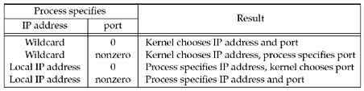

| [ Team LiB ] |
|
4.4 bind FunctionThe bind function assigns a local protocol address to a socket. With the Internet protocols, the protocol address is the combination of either a 32-bit IPv4 address or a 128-bit IPv6 address, along with a 16-bit TCP or UDP port number.
The second argument is a pointer to a protocol-specific address, and the third argument is the size of this address structure. With TCP, calling bind lets us specify a port number, an IP address, both, or neither.
As we said, calling bind lets us specify the IP address, the port, both, or neither. Figure 4.6 summarizes the values to which we set sin_addr and sin_port, or sin6_addr and sin6_port, depending on the desired result. Figure 4.6. Result when specifying IP address and/or port number to bind. If we specify a port number of 0, the kernel chooses an ephemeral port when bind is called. But if we specify a wildcard IP address, the kernel does not choose the local IP address until either the socket is connected (TCP) or a datagram is sent on the socket (UDP). With IPv4, the wildcard address is specified by the constant INADDR_ANY, whose value is normally 0. This tells the kernel to choose the IP address. We saw the use of this in Figure 1.9 with the assignment
struct sockaddr_in servaddr;
servaddr.sin_addr.s_addr = htonl (INADDR_ANY); /* wildcard */
While this works with IPv4, where an IP address is a 32-bit value that can be represented as a simple numeric constant (0 in this case), we cannot use this technique with IPv6, since the 128-bit IPv6 address is stored in a structure. (In C we cannot represent a constant structure on the right-hand side of an assignment.) To solve this problem, we write
struct sockaddr_in6 serv;
serv.sin6_addr = in6addr_any; /* wildcard */
The system allocates and initializes the in6addr_any variable to the constant IN6ADDR_ANY_INIT. The <netinet/in.h> header contains the extern declaration for in6addr_any. The value of INADDR_ANY (0) is the same in either network or host byte order, so the use of htonl is not really required. But, since all the INADDR_constants defined by the <netinet/in.h> header are defined in host byte order, we should use htonl with any of these constants. If we tell the kernel to choose an ephemeral port number for our socket, notice that bind does not return the chosen value. Indeed, it cannot return this value since the second argument to bind has the const qualifier. To obtain the value of the ephemeral port assigned by the kernel, we must call getsockname to return the protocol address. A common example of a process binding a non-wildcard IP address to a socket is a host that provides Web servers to multiple organizations (Section 14.2 of TCPv3). First, each organization has its own domain name, such as www.organization.com. Next, each organization's domain name maps into a different IP address, but typically on the same subnet. For example, if the subnet is 198.69.10, the first organization's IP address could be 198.69.10.128, the next 198.69.10.129, and so on. All these IP addresses are then aliased onto a single network interface (using the alias option of the ifconfig command on 4.4BSD, for example) so that the IP layer will accept incoming datagrams destined for any of the aliased addresses. Finally, one copy of the HTTP server is started for each organization and each copy binds only the IP address for that organization.
A common error from bind is EADDRINUSE ("Address already in use"). We will say more about this in Section 7.5 when we talk about the SO_REUSEADDR and SO_REUSEPORT socket options. |
| [ Team LiB ] |
|